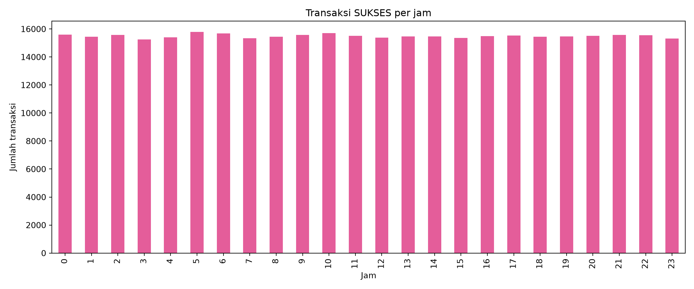

Institusi: Institut Teknologi Sains Bandung Nama: Olivia Meilinda Dvatin Pesireron NIM: 52240011 Kelas: SDT-2024
Bagian A - Pilihan Ganda
Bagian ini berisi soal pilihan ganda mengenai konsep dasar Big Data, NoSQL, HDFS, Spark, dan pengolahan data. Setiap jawaban dilengkapi alasan singkat untuk menjelaskan mengapa pilihan tersebut dianggap paling tepat.
A1
Data GPS 2 juta pengemudi ojek daring yang diperbarui setiap 3 detik paling menonjol pada karakteristik …
Variety
Velocity
Veracity
Value
Jawaban: (b) Velocity
Alasan: Velocity menunjukkan kecepatan data masuk dan diperbarui. Data GPS yang diperbarui setiap 3 detik lebih menonjol pada kecepatan dibandingkan variasi (Variety), keakuratan (Veracity), atau manfaat data (Value).
A2
Basis data yang paling tepat untuk menyimpan sesi login dengan masa berlaku 30 menit adalah …
Neo4j
MongoDB
Redis
HDFS
Jawaban: (c) Redis
Alasan: Redis cocok untuk menyimpan sesi login karena aksesnya cepat dan memiliki fitur TTL (Time to Live) untuk menghapus sesi otomatis setelah 30 menit. MongoDB lebih cocok untuk dokumen, Neo4j untuk hubungan antarentitas, dan HDFS untuk file besar.
A3
Pada MongoDB, tahap aggregation pipeline yang memecah elemen array menjadi dokumen terpisah adalah …
$match
$group
$unwind
$project
Jawaban: (c) $unwind
Alasan:$unwind digunakan untuk memecah setiap elemen array menjadi dokumen terpisah. Berbeda dengan $match untuk menyaring data, $group untuk mengelompokkan data, dan $project untuk memilih atau mengatur field.
A4
Berkas 700 MB diunggah ke HDFS dengan blok 128 MB dan replikasi 3. Jumlah blok dan ruang disk yang terpakai adalah …
5 blok, 700 MB
6 blok, 2.100 MB
6 blok, 2.304 MB
18 blok, 2.304 MB
Jawaban: (b) 6 blok, 2.100 MB
Alasan: Jumlah blok adalah 700 ÷ 128 = 5,47, dibulatkan menjadi 6 blok. Dengan replikasi 3, ruang disk yang digunakan adalah 700 × 3 = 2.100 MB, bukan 2.304 MB karena blok terakhir tidak terisi penuh.
A5
Komponen HDFS yang menyimpan metadata lokasi blok adalah …
DataNode
NameNode
Secondary NameNode
ResourceManager
Jawaban: (b) NameNode
Alasan: NameNode menyimpan metadata, termasuk informasi lokasi blok dalam HDFS. DataNode menyimpan data sebenarnya, Secondary NameNode membantu checkpoint metadata, sedangkan ResourceManager mengelola sumber daya YARN.
A6
Operasi Spark berikut yang merupakan aksi adalah …
map
filter
reduceByKey
count
Jawaban: (d) count
Alasan: count() merupakan action karena menjalankan komputasi dan menghasilkan jumlah elemen RDD. Sementara map, filter, dan reduceByKey termasuk transformation karena menghasilkan RDD baru.
A7
Untuk menjumlahkan nilai per kunci pada pair RDD besar, operasi yang paling efisien adalah …
groupByKey().mapValues(sum)
reduceByKey(lambda a, b: a + b)
collect() lalu dijumlah di Python
sortByKey()
Jawaban: (b) reduceByKey(lambda a, b: a + b)
Alasan: reduceByKey lebih efisien karena menjumlahkan nilai dengan kunci sama secara lokal sebelum mengirim data antar-node. Berbeda dengan groupByKey yang memindahkan lebih banyak data, collect() yang membebani memori lokal, dan sortByKey() yang hanya mengurutkan kunci.
A8
Mengapa skema eksplisit lebih disarankan daripada inferSchema=True pada pipeline produksi?
Skema eksplisit membuat data terkompresi
Lebih cepat, tidak salah tebak tipe, dan terdokumentasi
inferSchema tidak dapat membaca CSV
Skema eksplisit wajib untuk Parquet
Jawaban: (b) Lebih cepat, tidak salah tebak tipe, dan terdokumentasi
Alasan: Skema eksplisit menentukan tipe data sejak awal sehingga lebih konsisten dan menghindari kesalahan inferensi tipe. Berbeda dengan inferSchema=True yang perlu memeriksa data untuk menebak tipe, skema eksplisit juga membuat struktur data lebih jelas dan mudah dipelihara.
A9
Topic Kafka memiliki 4 partisi dan consumer group memiliki 6 konsumen. Berapa konsumen yang aktif membaca?
2
4
6
24
Jawaban: (b) 4
Alasan: Dalam satu consumer group Kafka, satu partisi hanya dapat dibaca oleh satu konsumen pada waktu yang sama. Karena hanya tersedia 4 partisi, maksimal 4 konsumen aktif membaca, sedangkan 2 konsumen lainnya menganggur.
A10
Cara yang benar membuat histogram kolom jarak_km dari 2 miliar baris adalah …
df.toPandas()[“jarak_km”].hist()
df.collect() lalu plt.hist
Menghitung jumlah per bin dengan groupBy di Spark, lalu menggambar hasilnya
Mengambil 10 baris pertama
Jawaban: (c) Menghitung jumlah per bin dengan groupBy di Spark, lalu menggambar hasilnya
Alasan: Spark dapat menghitung jumlah data per interval secara terdistribusi tanpa memindahkan seluruh 2 miliar baris ke memori lokal. Berbeda dengan toPandas() dan collect() yang berisiko kehabisan memori, sedangkan mengambil 10 baris tidak mewakili keseluruhan data.
Bagian B - Esai Singkat
B1 - Jelaskan perbedaan scale-up dan scale-out, dan jelaskan mengapa fase shuffle pada MapReduce/Spark merupakan bagian yang paling mahal.
Jawaban:
Scale-up ituuu adalah meningkatkan kemampuan satu server, misalnya dengan menambah RAM atau CPU agar lebih kuat. Sedangkan scale-out adalah menambah jumlah server supaya pekerjaan bisa dibagi dan dikerjakan bersama-sama. Fase shuffle pada MapReduce/Spark membutuhkan biaya proses paling besar soalnya data tu harus dipindahkan dari satu server ke server lain melalui jaringan. Proses ini butuh waktu dan sumber daya yang besar, terutama jika datanya sangat banyak.
B2 - Sebuah marketplace membutuhkan: (i) katalog produk dengan atribut berbeda per kategori, (ii) keranjang belanja sementara, dan (iii) rekomendasi “teman Anda juga membeli”. Pilih basis data NoSQL untuk masing-masing dan jelaskan alasannya.
Jawaban:
Katalog produk menggunakan MongoDB, karena bisa menyimpan produk dengan informasi yang berbeda-beda. Misalnya, produk baju memiliki ukuran dan warna, sedangkan HP memiliki RAM dan kapasitas penyimpanan.
Keranjang belanja menggunakan Redis, karena bisa menyimpan dan mengambil data dengan cepat. Redis juga bisa menghapus data keranjang secara otomatis setelah waktu tertentu menggunakan fitur TTL.
Rekomendasi teman menggunakan Neo4j, karena dapat menyimpan hubungan antara pengguna, teman, dan produk yang dibeli. Jadi, sistem lebih mudah mencari produk yang pernah dibeli oleh teman pengguna.
B3 - Jelaskan konsep lazy evaluation dan lineage pada Spark, serta manfaat masing-masing.
Jawaban:
Lazy evaluation adalah cara kerja Spark yang tidak langsung menjalankan perintah pengolahan data, tetapi menunggu sampai ada perintah yang meminta hasil, seperti count() atau collect(). Manfaatnya, Spark bisa mengatur proses terlebih dahulu agar pekerjaan lebih cepat dan efisien.
Lineage adalah catatan urutan proses yang dilakukan Spark untuk menghasilkan data. Manfaatnya, jika ada data yang hilang karena server bermasalah, Spark bisa membuat ulang bagian data yang hilang berdasarkan catatan proses tersebut tanpa mengulang semuanya dari awal.
B4 - Jelaskan perbedaan jaminan pengiriman at-most-once dan at-least-once, dan bagaimana checkpoint pada Spark Structured Streaming membantu mencegah data hilang atau terproses ganda.
Jawaban:
At-most-once berarti data hanya diproses paling banyak satu kali, tetapi ada kemungkinan data hilang jika terjadi gangguan. At-least-once berarti data dipastikan diproses minimal satu kali, tetapi ada kemungkinan data yang sama diproses berulang. Checkpoint pada Spark Structured Streaming berfungsi untuk menyimpan catatan sampai mana data sudah diproses. Jadi, jika sistem tiba-tiba berhenti, Spark bisa melanjutkan dari proses terakhir yang tercatat tanpa harus mengulang semuanya. Hal ini membantu mengurangi risiko data hilang atau diproses dua kali, tetapi untuk benar-benar mencegah hasil ganda, sistem penyimpanan hasil juga harus mendukungnya.
Bagian C – Praktik Coding Studi Kasus Dompet Digital BayarYuk
Pendahuluan
Pada bagian ini dilakukan pengolahan data dari aplikasi dompet digital BayarYuk. Data yang digunakan terdiri dari data merchant, catatan transaksi, dan transaksi baru yang masuk melalui file JSON. Pengolahan dilakukan secara bertahap supaya data yang kurang sesuai dapat diketahui, hasil transaksi dapat dihitung, dan informasi pentingnya bisa dijelaskan dengan lebih mudah.
Data merchant terdiri dari 200 dokumen yang berisi informasi seperti nama, kategori, kota, rating, promo, dan sebagian data jam buka. Data log berisi 400.000 baris transaksi, termasuk beberapa baris yang rusak serta nominal yang tidak wajar. Selain itu, tersedia tiga file JSON untuk simulasi streaming, dengan 500 event pada setiap file.
Tujuan praktik ini adalah memahami cara menggunakan MongoDB untuk mencari dan meringkas merchant, Spark RDD untuk membersihkan log, Spark DataFrame untuk analisis transaksi, Structured Streaming untuk memproses data masuk, dan EDA untuk menghasilkan grafik serta insight. Kode dijalankan berurutan karena beberapa hasil digunakan kembali pada bagian selanjutnya.
Persiapan Lingkungan dan Dataset
Bagian ini menyiapkan Spark dan dataset yang akan digunakan selama praktik. Chunk setup-spark membuat sesi Spark, sedangkan uts-data menghasilkan data merchant, log transaksi, dan file JSON. Kedua chunk berasal dari materi awal dan bagian pembangkit dataset tetap dipertahankan.
Angka dalam penjelasan berikut mengacu pada hasil dataset resmi yang sudah dirender. Setelah menjalankan ulang, cocokkan kembali dengan tabel output, terutama urutan batch streaming dan hasil perhitungan perkiraan.
# Mengimpor modul sistem untuk mengatur lingkungan Python.import os, sys# Driver dan worker PySpark memakai interpreter Python yang sama.os.environ.setdefault("PYSPARK_PYTHON", sys.executable)
# Mengimpor SparkSession sebagai pintu masuk fitur Spark.from pyspark.sql import SparkSession# Membuat sesi Spark mode lokal untuk praktikum.spark = ( SparkSession.builder# Memakai seluruh core CPU laptop. .master("local[*]")# Nama aplikasi Spark. .appName("BigData-P08")# Mematikan bar progres agar output dokumen rapi. .config("spark.ui.showConsoleProgress", "false")# Partisi shuffle 8 (default 200 terlalu besar untuk praktikum). .config("spark.sql.shuffle.partitions", "8")# Memori driver 2 GB. .config("spark.driver.memory", "2g")# Membuat sesi baru atau memakai sesi yang sudah ada. .getOrCreate())
C:\Users\pc\OneDrive\DOCUME~1\VIRTUA~1\R-RETI~1\Lib\site-packages\pyspark\testing\utils.py:127: FutureWarning: PySpark does not yet fully support pandas >= 3.0.0. Some features may not work correctly. It is recommended to use pandas < 3.0.0 for now.
require_minimum_pandas_version()
# Hanya menampilkan log tingkat ERROR.spark.sparkContext.setLogLevel("ERROR")# Menyimpan referensi SparkContext.sc = spark.sparkContext# Menampilkan versi, mode master, dan jumlah core paralel.print("Spark versi", spark.version,"| master:", sc.master,"| jumlah core paralel:", sc.defaultParallelism)
Spark versi 4.3.0 | master: local[*] | jumlah core paralel: 4
# Mengimpor pustaka yang dipakai selama ujian.import numpy as npimport pandas as pdimport os, json, tempfileimport mongomockfrom pyspark.sql import functions as Ffrom pyspark.sql.window import Window# Seed tetap agar semua peserta mendapat data yang sama.rng = np.random.default_rng(2026)folder = tempfile.mkdtemp()# 1) Data merchant (dokumen MongoDB)kategori = ["Kuliner", "Retail", "Transportasi", "Hiburan", "Kesehatan"]kota = ["Jakarta", "Bandung", "Surabaya", "Medan", "Makassar"]merchant = []for i inrange(1, 201):# Setiap merchant memiliki 0-2 promo acak. d = {"_id": f"M{i:03d}", "nama": f"Merchant {i}","kategori": str(rng.choice(kategori)),"kota": str(rng.choice(kota)),"rating": float(np.round(rng.uniform(3.0, 5.0), 1)),"promo": [str(p) for p in rng.choice(["cashback", "diskon", "gratis_ongkir", "poin"], size=rng.integers(0, 3), replace=False)]}# 30% merchant memiliki field jam_buka (skema fleksibel).if rng.random() <0.3: d["jam_buka"] = {"buka": "08:00", "tutup": str(rng.choice(["21:00", "22:00", "23:59"]))} merchant.append(d)# Menyimpan merchant ke MongoDB (simulator).db = mongomock.MongoClient()["bayaryuk"]db["merchant"].insert_many(merchant)
# 2) Log transaksi (berkas teks, 400 ribu baris)# format: waktu|id_trx|id_user|id_merchant|nominal|statusn =400_000waktu = pd.Timestamp("2026-09-01") + pd.to_timedelta(rng.integers(0, 30*86400, n), unit="s")id_m = rng.choice([m["_id"] for m in merchant], n)nominal = np.round(rng.lognormal(10.6, 0.9, n), -2).astype(int)status = rng.choice(["SUKSES", "GAGAL", "PENDING"], n, p=[0.93, 0.05, 0.02])# Menyuntikkan kesalahan sistem (-1) dan nilai ekstrem mencurigakan.nominal[rng.choice(n, 150, replace=False)] =-1nominal[rng.choice(n, 80, replace=False)] =250_000_000# Menyusun baris log berpemisah "|".baris = [f"{w:%Y-%m-%d %H:%M:%S}|T{i:07d}|U{u:05d}|{m}|{v}|{s}"for i, (w, u, m, v, s) inenumerate(zip(waktu, rng.integers(1, 50_000, n), id_m, nominal, status))]# Setiap baris ke-5.000 diganti baris log rusak.baris[::5000] = ["ERROR koneksi timeout"] *len(baris[::5000])jalur_log = os.path.join(folder, "transaksi.log")withopen(jalur_log, "w") as f: f.write("\n".join(baris))
# 3) Landing zone untuk streaming (3 berkas JSON, 3% nominal null)landing = os.path.join(folder, "landing"); os.makedirs(landing)for b inrange(3):withopen(os.path.join(landing, f"batch_{b}.json"), "w") as f:for k inrange(500): e = {"id_trx": f"S{b}{k:04d}", "id_merchant": str(rng.choice(id_m)),"nominal": int(rng.lognormal(10.6, 0.9)) if rng.random() >0.03elseNone,"waktu": str(pd.Timestamp("2026-10-01 09:00")+ pd.Timedelta(minutes=b *5+ k %5))} f.write(json.dumps(e) +"\n")
Merchant: 200 | Baris log: 400000 | Berkas landing: 3
Penjelasan output: Data resmi berisi 200 merchant, 400.000 baris log, dan 3 file landing. Ketiga file itu digunakan pada simulasi streaming di C4.
# Nama bantu menghubungkan data resmi dengan langkah analisis berikutnya.gateway.Popen = _popen_aslifrom datetime import datetimefrom pyspark.sql.types import StructType, StructField, StringType, LongType, TimestampTypedef display(tabel):print(tabel.to_string(index=False))merchant_collection = db["merchant"]landing_dir = landingdata_root = folderoutput_parquet = os.path.join(folder, "parquet_valid")checkpoint_dir = os.path.join(folder, "checkpoint")
C1 – Kueri dan Agregasi NoSQL
C1 menggunakan MongoDB untuk menyaring merchant, memeriksa field yang tersedia, dan membuat ringkasan per kategori.
C1(a) – Mencari merchant Kuliner di Bandung
Yang dikerjakan: Kode mencari merchant dengan kategori Kuliner, kota Bandung, promo cashback, dan rating minimal 4,0. Filter dilakukan langsung di MongoDB supaya data yang ditampilkan hanya yang memenuhi semua syarat.
# Pilih merchant yang memenuhi seluruh kriteria, lalu urutkan rating tertinggi.c1a_rows =list( merchant_collection.find( {'kategori': 'Kuliner', 'kota': 'Bandung', 'promo': 'cashback', 'rating': {'$gte': 4.0}}, {'_id': 0, 'nama': 1, 'rating': 1, 'promo': 1} ).sort('rating', -1))# Daftar promo dijadikan teks supaya setiap merchant tampil dalam satu baris.for merchant in c1a_rows: merchant['promo'] =', '.join(merchant.get('promo', []))c1a_json = json.dumps(c1a_rows, ensure_ascii=False)display(pd.DataFrame(c1a_rows, columns=["nama", "rating", "promo"]))
nama rating promo
Merchant 75 4.1 cashback
Penjelasan output: Hasil yang muncul adalah Merchant 75 dengan rating 4,1 dan promo cashback. Merchant ini memenuhi semua syarat: Kuliner, Bandung, memiliki cashback, dan rating minimal 4,0.
C1(b) – Menghitung merchant yang memiliki jam buka
Yang dikerjakan: Pemeriksaan $exists digunakan untuk mengetahui apakah informasi jam_buka tersedia pada dokumen, tanpa harus melihat masing-masing merchant secara manual.
# Hitung merchant yang sudah mencantumkan informasi jam buka.jumlah_jam_buka = merchant_collection.count_documents({'jam_buka': {'$exists': True}})print("Jumlah merchant dengan jam buka:", jumlah_jam_buka)
Jumlah merchant dengan jam buka: 61
Penjelasan output: Ada 61 dari 200 merchant yang memiliki informasi jam_buka. Artinya, informasi itu belum tersedia pada 139 merchant lainnya.
C1(c) – Membandingkan jumlah merchant dan rata-rata rating
Yang dikerjakan: Aggregation pipeline mengelompokkan merchant menurut kategori melalui $group, menghitung jumlah dengan $sum, menghitung rata-rata rating dengan $avg, dan mengurutkan dari rating tertinggi memakai $sort.
# Kelompokkan merchant berdasarkan kategori untuk melihat jumlah dan rata-rata rating.c1c_pipeline = [ {'$group': {'_id': '$kategori', 'jumlah_merchant': {'$sum': 1}, 'rata_rata_rating': {'$avg': '$rating'}}}, {'$project': {'_id': 0, 'kategori': '$_id', 'jumlah_merchant': 1, 'rata_rata_rating': 1}}, {'$sort': {'rata_rata_rating': -1}}]c1c_rows =list(merchant_collection.aggregate(c1c_pipeline))for kategori in c1c_rows: kategori['rata_rata_rating'] =round(kategori['rata_rata_rating'], 2)c1c_json = json.dumps(c1c_rows, ensure_ascii=False)display(pd.DataFrame(c1c_rows)[["kategori", "jumlah_merchant", "rata_rata_rating"]])
Penjelasan output: Kategori Kuliner memiliki rata-rata rating tertinggi, yaitu 4,15 dari 28 merchant. Kategori dengan merchant terbanyak adalah Transportasi, sebanyak 48 merchant, dengan rata-rata rating 4,10.
Temuan dan kesimpulan C1
Temuan: Ada satu merchant yang cocok dengan kriteria pencarian, 61 merchant memiliki informasi jam buka, dan kategori Kuliner memperoleh rata-rata rating tertinggi sebesar 4,15.
Kesimpulan: Kueri membantu memilih merchant yang sesuai, sementara agregasi membuat informasi setiap kategori lebih mudah dibandingkan.
C2 – Pemrosesan Log dengan Spark RDD
C2 mengolah file log menggunakan Spark RDD. Langkah pembersihan dilakukan lebih dahulu supaya hitungan transaksi tidak tercampur baris yang rusak.
C2(a) – Membaca log dan memisahkan baris rusak
Yang dikerjakan: Setiap baris log dipisahkan menjadi enam bagian. Baris dengan format salah atau nominal yang tidak bisa menjadi bilangan bulat dibuang, sementara accumulator mencatat jumlah baris rusak. RDD hasil pembersihan disimpan dalam cache agar dapat digunakan lagi.
# Accumulator dipakai untuk mencatat baris log yang rusak tanpa mengambil data mentah ke driver.baris_rusak = sc.accumulator(0)def parse_transaksi(line): bagian = line.strip().split('|')iflen(bagian) !=6: baris_rusak.add(1)returnNonetry: waktu, id_trx, id_user, id_merchant, nominal, status = bagianreturn (waktu, id_trx, id_user, id_merchant, int(nominal), status)exceptValueError: baris_rusak.add(1)returnNonetransaksi_rdd = sc.textFile(jalur_log).map(parse_transaksi).filter(lambda baris: baris isnotNone).cache()jumlah_transaksi_valid = transaksi_rdd.count()jumlah_baris_rusak = baris_rusak.valuedisplay(pd.DataFrame({"Keterangan": ["Transaksi valid", "Baris rusak"], "Jumlah": [jumlah_transaksi_valid, jumlah_baris_rusak]}))
Keterangan Jumlah
Transaksi valid 399920
Baris rusak 80
Penjelasan output: Dari 400.000 baris log, 399.920 baris berhasil dibaca dan 80 baris rusak. Valid di sini berarti format baris dapat dibaca; nominal yang tidak wajar masih perlu diperiksa pada tahap berikutnya.
C2(b) – Menghitung transaksi berdasarkan status
Yang dikerjakan: Status SUKSES, GAGAL, dan PENDING dihitung menggunakan reduceByKey(). Cara ini menggabungkan hitungan per kunci sebelum hasil ringkasannya diambil, sehingga tidak perlu mengambil seluruh data mentah.
# reduceByKey menjumlahkan transaksi per status secara terdistribusi.status_rows = transaksi_rdd.map(lambda baris: (baris[5], 1)).reduceByKey(lambda total, nilai: total + nilai).collect()status_rows =sorted(status_rows, key=lambda item: item[1], reverse=True)c2b_json = json.dumps([{'status': status, 'jumlah': jumlah} for status, jumlah in status_rows])display(pd.DataFrame(status_rows, columns=["Status", "Jumlah transaksi"]))
Status Jumlah transaksi
SUKSES 371870
GAGAL 20166
PENDING 7884
Penjelasan output: Terdapat 371.870 transaksi SUKSES, 20.166 GAGAL, dan 7.884 PENDING. Jumlahnya adalah 399.920, sesuai dengan jumlah baris yang berhasil dibaca pada C2(a).
C2(c) – Mencari lima merchant dengan kegagalan tertinggi
Yang dikerjakan: Kode menjumlahkan total transaksi dan banyaknya status GAGAL pada setiap merchant. Hanya merchant dengan minimal 1.500 transaksi yang dipertahankan. Persentase gagal dihitung dari transaksi gagal dibagi total transaksi lalu dikalikan 100.
# Setiap merchant dihitung total transaksi dan total GAGAL-nya, lalu dipilih lima yang tertinggi.ringkasan_merchant = ( transaksi_rdd .map(lambda baris: (baris[3], (1, 1if baris[5] =='GAGAL'else0))) .reduceByKey(lambda kiri, kanan: (kiri[0] + kanan[0], kiri[1] + kanan[1])) .filter(lambda item: item[1][0] >=1500) .map(lambda item: (item[0], item[1][0], item[1][1], round(item[1][1] / item[1][0] *100, 2))))c2c_rows = ringkasan_merchant.takeOrdered(5, key=lambda item: -item[3])c2c_json = json.dumps([{'merchant': m, 'total': total, 'gagal': gagal, 'persen': persen}for m, total, gagal, persen in c2c_rows])display(pd.DataFrame(c2c_rows, columns=["ID merchant", "Total transaksi", "Transaksi gagal", "Gagal (%)"]))
ID merchant Total transaksi Transaksi gagal Gagal (%)
M164 2051 130 6.34
M048 2025 125 6.17
M186 1948 120 6.16
M147 1959 120 6.13
M145 1981 119 6.01
Penjelasan output: Merchant M164 memiliki tingkat gagal tertinggi, yaitu 6,34% atau 130 transaksi gagal dari 2.051 transaksi. Persentase membantu membandingkan kegagalan secara lebih adil karena jumlah transaksi setiap merchant bisa berbeda.
Temuan dan kesimpulan C2
Temuan: Ada 80 baris rusak. Dari baris yang terbaca, transaksi sukses merupakan jumlah terbesar, sedangkan M164 memiliki persentase gagal tertinggi sebesar 6,34% di antara merchant yang memenuhi batas minimal transaksi.
Kesimpulan: Pembersihan format perlu dilakukan sebelum menghitung status dan membandingkan tingkat kegagalan merchant.
C3 – Analisis dengan Spark DataFrame dan SQL
C3 mengubah data menjadi DataFrame lalu menganalisis transaksi sukses berdasarkan informasi merchant.
C3(a) – Mengubah RDD menjadi DataFrame
Yang dikerjakan: Data dari RDD diubah menjadi DataFrame dengan skema eksplisit. Kolom waktu dibuat bertipe timestamp, nominal dibuat long, dan kolom identitas maupun status menggunakan string.
# Siapkan tipe kolom agar waktu dan nominal terbaca dengan benar.from pyspark.sql.types import StructType, StructField, StringType, LongType, TimestampTypefrom pyspark.sql import functions as Ffrom pyspark.sql.window import Window# Skema eksplisit memastikan waktu menjadi timestamp dan nominal menjadi long.skema_transaksi = StructType([ StructField('waktu', TimestampType(), False), StructField('id_trx', StringType(), False), StructField('id_user', StringType(), False), StructField('id_merchant', StringType(), False), StructField('nominal', LongType(), False), StructField('status', StringType(), False)])transaksi_df = spark.createDataFrame( transaksi_rdd.map(lambda baris: (datetime.strptime(baris[0], '%Y-%m-%d %H:%M:%S'), baris[1], baris[2], baris[3], int(baris[4]), baris[5])), skema_transaksi)transaksi_df.printSchema()
Penjelasan output: Skema menunjukkan waktu bertipe timestamp dan nominal bertipe long. Delapan baris contoh membantu memastikan kolom transaksi sudah terbaca sesuai formatnya.
C3(b) – Menggabungkan merchant dengan transaksi sukses
Yang dikerjakan: Data merchant dibuat menjadi DataFrame kecil yang hanya memuat ID, kategori, dan kota. Data tersebut kemudian digabung dengan transaksi berstatus SUKSES dengan nominal lebih dari nol dan kurang dari Rp50 juta. broadcast() membantu karena data merchant jauh lebih kecil.
# Data merchant dibuat kecil lalu dibroadcast saat join dengan data transaksi yang besar.merchant_rows_spark = [(m['_id'], m['kategori'], m['kota']) for m in merchant_collection.find({}, {'_id': 1, 'kategori': 1, 'kota': 1})]merchant_df = spark.createDataFrame(merchant_rows_spark, ['id_merchant', 'kategori', 'kota'])transaksi_valid_df = transaksi_df.filter( (F.col('status') =='SUKSES') & (F.col('nominal') >0) & (F.col('nominal') <50000000))transaksi_join_df = transaksi_valid_df.join(F.broadcast(merchant_df), 'id_merchant', 'inner')transaksi_join_df.show(8, truncate=False)
Penjelasan output: Contoh output menambahkan kolom kategori dan kota ke transaksi sukses. Misalnya, transaksi merchant M172 sebesar Rp25.000 terhubung dengan kategori Hiburan di Medan.
C3(c) – Menghitung total nominal per kota dan kategori
Yang dikerjakan: Transaksi yang sudah digabung dikelompokkan berdasarkan kota dan kategori, lalu nominalnya dijumlahkan dengan sum(). Data yang dibawa ke R hanya tabel hasil ringkasannya.
# Agregasi selesai di Spark; yang dibawa ke R hanya tabel ringkasan yang kecil.total_kota_kategori_df = ( transaksi_join_df .groupBy('kota', 'kategori') .agg(F.sum('nominal').alias('total_nominal')) .orderBy('kota', 'kategori'))# Hanya hasil agregasi yang kecil dikirim untuk dibuat tabel.c3c_json = json.dumps([baris.asDict() for baris in total_kota_kategori_df.collect()], ensure_ascii=False)display(pd.DataFrame([baris.asDict() for baris in total_kota_kategori_df.collect()]))
kota kategori total_nominal
Bandung Hiburan 1100050900
Bandung Kesehatan 668446100
Bandung Kuliner 898654300
Bandung Retail 1016883400
Bandung Transportasi 1455560000
Jakarta Hiburan 888514200
Jakarta Kesehatan 778065700
Jakarta Kuliner 214176200
Jakarta Retail 556442400
Jakarta Transportasi 1138838700
Makassar Hiburan 1003119800
Makassar Kesehatan 1236338300
Makassar Kuliner 580311300
Makassar Retail 1344025800
Makassar Transportasi 557000900
Medan Hiburan 1005036300
Medan Kesehatan 1008722600
Medan Kuliner 805227200
Medan Retail 776654600
Medan Transportasi 1439104900
Surabaya Hiburan 868802300
Surabaya Kesehatan 1000164700
Surabaya Kuliner 677970800
Surabaya Retail 564119200
Surabaya Transportasi 800425300
Penjelasan output: Tabel menjumlahkan nominal transaksi sukses yang lolos filter untuk tiap kombinasi kota dan kategori. Misalnya, Bandung–Transportasi menghasilkan total Rp1.455.560.000.
C3(d) – Mengambil kategori dengan nominal tertinggi di setiap kota
Yang dikerjakan: Window function digunakan untuk menghitung total nominal satu kota, menghitung porsi setiap kategori, lalu menentukan peringkat kategori pada kota tersebut.
# Window menghitung total kota dan menentukan kategori dengan nominal paling tinggi di kota tersebut.jendela_kota = Window.partitionBy('kota')jendela_ranking = Window.partitionBy('kota').orderBy(F.desc('total_nominal'))kategori_teratas_df = ( total_kota_kategori_df .withColumn('total_nominal_kota', F.sum('total_nominal').over(jendela_kota)) .withColumn('porsi_persen', F.round(F.col('total_nominal') / F.col('total_nominal_kota') *100, 2)) .withColumn('urutan', F.row_number().over(jendela_ranking)) .filter(F.col('urutan') ==1) .select('kota', 'kategori', 'total_nominal', 'porsi_persen') .orderBy('kota'))c3d_json = json.dumps([baris.asDict() for baris in kategori_teratas_df.collect()], ensure_ascii=False)display(pd.DataFrame([baris.asDict() for baris in kategori_teratas_df.collect()]))
kota kategori total_nominal porsi_persen
Bandung Transportasi 1455560000 28.32
Jakarta Transportasi 1138838700 31.85
Makassar Retail 1344025800 28.47
Medan Transportasi 1439104900 28.58
Surabaya Kesehatan 1000164700 25.57
Penjelasan output: Di Bandung, kategori teratas adalah Transportasi dengan nominal Rp1.455.560.000, atau 28,32% dari total nominal kota tersebut. Tabel juga menunjukkan kategori teratas untuk Jakarta, Makassar, Medan, dan Surabaya.
Temuan dan kesimpulan C3
Temuan: Transportasi menjadi kategori teratas di Bandung, Jakarta, dan Medan. Retail teratas di Makassar, sedangkan Kesehatan teratas di Surabaya.
Kesimpulan: Penggabungan data transaksi dan merchant membantu melihat kontribusi nominal menurut kota dan kategori. Polanya perlu dibaca sesuai karakter dataset simulasi.
C4 – Ingestion dengan Structured Streaming
C4 mensimulasikan masuknya transaksi baru dari file JSON, lalu menyimpan data valid dalam Parquet.
C4 – Memproses data JSON dengan Structured Streaming
Yang dikerjakan: Streaming membaca file JSON dengan skema yang ditentukan di awal. Setiap batch memisahkan nominal null sebagai tidak valid, menyimpan event yang valid menjadi Parquet, dan mencatat jumlah valid maupun tidak valid. Checkpoint menyimpan progres pemrosesan.
# Schema JSON dibuat eksplisit supaya tipe kolom streaming selalu konsisten.schema_stream = StructType([ StructField('id_trx', StringType(), False), StructField('id_merchant', StringType(), False), StructField('nominal', LongType(), True), StructField('waktu', TimestampType(), True)])catatan_batch = []catatan_path = os.path.join(data_root, 'catatan_batch_c4.jsonl')def proses_batch(batch_df, id_batch): data_valid = batch_df.filter(F.col('nominal').isNotNull()) data_tidak_valid = batch_df.filter(F.col('nominal').isNull()) jumlah_valid = data_valid.count() jumlah_tidak_valid = data_tidak_valid.count()if jumlah_valid >0: data_valid.write.mode('append').parquet(output_parquet) catatan = {'batch': int(id_batch), 'valid': int(jumlah_valid), 'tidak_valid': int(jumlah_tidak_valid)} catatan_batch.append(catatan)# Simpan ringkasan supaya tabel tetap bisa dibaca saat tidak ada batch baru.withopen(catatan_path, 'a', encoding='utf-8') as catatan_file: catatan_file.write(json.dumps(catatan) +'\n')streaming_df = spark.readStream.schema(schema_stream).option('maxFilesPerTrigger', 1).json(landing_dir)query_stream = ( streaming_df.writeStream .option('checkpointLocation', checkpoint_dir) .trigger(availableNow=True) .foreachBatch(proses_batch) .start())query_stream.awaitTermination()catatan_tersimpan = []if os.path.exists(catatan_path):withopen(catatan_path, encoding='utf-8') as catatan_file: catatan_tersimpan = [json.loads(baris) for baris in catatan_file if baris.strip()]catatan_batch_json = json.dumps(catatan_tersimpan)jumlah_batch_baru =len(catatan_batch)total_baris_parquet = spark.read.parquet(output_parquet).count() if os.path.exists(output_parquet) elseNonedisplay(pd.DataFrame(catatan_tersimpan, columns=["batch", "valid", "tidak_valid"]))
print("Total baris Parquet:", total_baris_parquet)
Total baris Parquet: 1447
Penjelasan output: Pada hasil render sebelumnya, batch 0 menghasilkan 486 valid dan 14 nominal kosong, batch 1 479 valid dan 21 kosong, dan batch 2 482 valid dan 18 kosong. Totalnya 1.447 event valid dan 53 event dengan nominal kosong. Output Parquet berisi 1.447 baris karena hanya event dengan nominal terisi yang disimpan. Urutan file dan nomor batch dapat berbeda saat dijalankan ulang, sehingga tabel terbaru tetap menjadi acuan.
Pada dataset yang dibuat, terdapat tiga file dengan 500 event per file, yaitu 1.500 event. Saat tiga file diproses seluruhnya dan tercatat, total event di tabel ringkasan diharapkan 1.500. Kode ini hanya memeriksa apakah nominal kosong; angka nol atau negatif tidak diperiksa sebagai tidak valid dalam C4. Checkpoint dapat membuat jumlah batch baru menjadi nol saat kode dijalankan lagi; tabel tetap tampil jika catatan batch sebelumnya tersedia. Dataset yang diproses sebelum fitur pencatatan ditambahkan perlu diproses pada folder dataset baru untuk menghasilkan catatan per batch.
Temuan dan kesimpulan C4
Temuan: Dari 1.500 event yang diproses, 1.447 memiliki nominal terisi dan 53 memiliki nominal kosong. Jumlah baris Parquet sesuai dengan jumlah event valid pada hasil tersebut.
Kesimpulan: Validasi memisahkan event yang belum lengkap sebelum event valid disimpan dalam format Parquet.
C5 – EDA Skala Besar dan Insight
C5 memeriksa kualitas data, menghitung ringkasan nominal, dan mengamati jam transaksi sukses.
C5(a) – Memeriksa kualitas data transaksi
Yang dikerjakan: Dalam satu select(), kode menghitung nominal negatif, nominal minimal Rp50 juta, dan transaksi dengan status PENDING. Ketiganya memberi gambaran kualitas data yang perlu diperhatikan.
# Seluruh indikator kualitas dihitung dalam satu select agar hanya satu lintasan data yang diperlukan.kualitas_data_df = transaksi_df.select( F.sum(F.when(F.col('nominal') <0, 1).otherwise(0)).alias('nominal_negatif'), F.sum(F.when(F.col('nominal') >=50000000, 1).otherwise(0)).alias('nominal_ekstrem'), F.sum(F.when(F.col('status') =='PENDING', 1).otherwise(0)).alias('status_pending'))kualitas_json = json.dumps([baris.asDict() for baris in kualitas_data_df.collect()])display(pd.DataFrame([baris.asDict() for baris in kualitas_data_df.collect()]))
Penjelasan output: Terdapat 150 nominal negatif, 80 nominal minimal Rp50 juta, dan 7.884 transaksi PENDING. Nominal negatif dan ekstrem perlu diperiksa sebelum digunakan untuk menghitung ringkasan nominal.
C5(b) – Menghitung persentil nominal valid
Yang dikerjakan: Kode menyaring nominal di atas nol dan di bawah Rp50 juta, lalu menggunakan approxQuantile() untuk menghitung P5, P50, P95, dan P99 secara efisien.
# approxQuantile menghitung persentil secara efisien tanpa memindahkan seluruh nominal ke R.nominal_valid_df = transaksi_df.filter((F.col('nominal') >0) & (F.col('nominal') <50000000))nilai_persentil = nominal_valid_df.approxQuantile('nominal', [0.05, 0.50, 0.95, 0.99], 0.01)persentil_json = json.dumps([{'persentil': nama, 'nominal': nilai} for nama, nilai inzip(['P5', 'P50', 'P95', 'P99'], nilai_persentil)])display(pd.DataFrame({"Persentil": ["P5", "P50", "P95", "P99"], "Nominal": nilai_persentil}))
Penjelasan output: Perkiraan P5 adalah Rp9.500, P50 Rp39.800, P95 Rp173.600, dan P99 Rp2.788.700. P50 merupakan perkiraan median: sekitar setengah nominal valid berada di bawah nilai tersebut. Semua angka ini merupakan perkiraan approxQuantile, bukan nilai persentil yang dihitung secara tepat.
C5(c) – Membuat grafik transaksi sukses per jam
Yang dikerjakan: Kode menyaring transaksi SUKSES, mengambil jam dari waktu transaksi, menghitung jumlah per jam, lalu membuat grafik batang dari hasil agregasi Spark.
# Spark menghitung jumlah transaksi sukses per jam; hasil akhirnya hanya sekitar 24 baris.sukses_per_jam_df = ( transaksi_df .filter(F.col('status') =='SUKSES') .withColumn('jam', F.hour('waktu')) .groupBy('jam') .agg(F.count('*').alias('jumlah_transaksi')) .orderBy('jam'))sukses_per_jam_json = json.dumps([baris.asDict() for baris in sukses_per_jam_df.collect()])sukses_per_jam = pd.DataFrame([baris.asDict() for baris in sukses_per_jam_df.collect()])display(sukses_per_jam)
import matplotlib.pyplot as pltax = sukses_per_jam.plot.bar(x="jam", y="jumlah_transaksi", color="#e45d9a", figsize=(12, 5), legend=False)ax.set(title="Transaksi SUKSES per jam", xlabel="Jam", ylabel="Jumlah transaksi")plt.tight_layout()plt.show()

Penjelasan output: Grafik memperlihatkan jumlah transaksi SUKSES untuk jam 00–23. Pada hasil yang ditampilkan, jumlah tertinggi terjadi pada pukul 05.00, sebanyak 15.780 transaksi.
C5(d) – Dua insight dari hasil pengolahan
Bagian ini mengambil dua temuan dari hasil C5(a) dan C5(c). Isi angka pada bagian berikut sesuai tabel dan grafik setelah kedua kode berhasil dijalankan.
Insight 1 – Kualitas nominal transaksi
Temuan: Hasil pemeriksaan menunjukkan ada 150 transaksi dengan nominal negatif dan 80 transaksi dengan nominal minimal Rp50 juta.
Bukti: Jumlah tersebut berasal dari tabel kualitas data C5(a), yang menghitung indikator masalah nominal secara langsung dari DataFrame transaksi.
Rekomendasi: Pemeriksaan nominal perlu dilakukan sebelum data dipakai untuk analisis berikutnya, supaya nilai yang tidak wajar tidak memengaruhi ringkasan nominal transaksi.
Insight 2 – Jam transaksi sukses terbanyak
Temuan: Jam dengan transaksi SUKSES paling banyak adalah 05.00, dengan 15.780 transaksi.
Bukti: Nilainya terlihat pada hasil hitungan dan batang tertinggi dalam grafik transaksi SUKSES per jam pada C5(c).
Rekomendasi: Jam yang lebih ramai dapat dijadikan bahan pertimbangan dalam menyiapkan kapasitas dan pemantauan sistem, supaya layanan tetap stabil ketika aktivitas transaksi meningkat.
Temuan dan kesimpulan C5
Temuan: Ada 150 nominal negatif dan 80 nominal ekstrem. Perkiraan median nominal valid adalah Rp39.800, sedangkan pukul 05.00 memiliki jumlah transaksi sukses tertinggi.
Kesimpulan: Pemeriksaan kualitas dan pola transaksi membantu menentukan data yang layak dianalisis serta waktu yang perlu mendapat perhatian.
Kesimpulan Bagian C
Pada praktik ini, MongoDB digunakan untuk mencari serta meringkas merchant, Spark RDD untuk membersihkan log dan menghitung status transaksi, Spark DataFrame untuk menggabungkan data dan menghitung total nominal, serta Structured Streaming untuk memproses transaksi baru. Hasil EDA digunakan untuk melihat kualitas data dan pola transaksi berdasarkan jam setelah bagian terkait berhasil dijalankan.
Kesimpulan angka dan grafik akhir perlu dilihat setelah semua chunk berhasil dijalankan, karena isi tabel harus sesuai dengan dataset yang benar-benar diproses.